Přehled důkazních materiálů
Veškeré dokumenty byly znovu zařazeny do spisu při obnovení vyšetřování v roce 2026. Některé materiály představují podpůrné důkazy a samy o sobě neprokazují vinu žádné osoby. Pro správné vyřešení případu je nutné porovnávat jednotlivé dokumenty, časové údaje a výpovědi všech zúčastněných.
| Označení | Název důkazu |
|---|---|
| D-01 | Program slavnostního galavečera |
| D-02 | Rozpis služeb zaměstnanců hotelu |
| D-03 | Hotelová karta hosta — apartmán č. 210 |
| D-04 | Vizitka fotografky Lenky Novotné |
| D-05 | VIP parkovací karta řidiče Vládi Beneše |
| D-06 | Účtenky z hotelové kavárny |
| D-07/D-10 | Protokol o nálezu a fotografie šperků |
| D-08/D-11 | Kniha ztrát a nálezů hotelu Mare Blu |
| D-13 | Mapa hotelu Mare Blu |
| D-15 | Seznam hostů galavečera |
| D-16 | Evidence univerzálních klíčů |
| D-17 | Předávací protokol — apartmán č. 210 |
| D-18 | Denní hlášení správce hotelu |
| D-19 | Usnesení o odložení případu (2016) |
| D-20 | Výpis z rezervační knihy hotelu |
| D-21 | Forenzní zpráva z ohledání místa činu |
| D-22 | Obnovení vyšetřování (2026) |
| D-23 | Dodatek k časové ose vyšetřování |
| F-01/F-02, F-13/F-14 | Fotografie z místa a doprovodná zpráva fotografky |
D-01 — Program slavnostního galavečera
| 18:00 | Příjezd VIP hostů a uvítání |
| 18:30 | Přípitek ve vstupní hale |
| 19:05 | Organizátorka vyzvedává paní Isabellu Moretti v apartmánu |
| 19:20 | Slavnostní příchod paní Moretti do hlavního sálu |
| 19:30 | Zahájení galavečera |
| 19:45 | Úvodní projev a slavnostní přípitek |
| 20:00 | Podávání slavnostní večeře |
| 20:45 | Hudební vystoupení |
| 21:30 | Společenská část večera |
| 22:00 | Fotografování hostů |
| 22:30 | Volná zábava |
Poznámka organizátorky: Paní Moretti musí být nejpozději v 19:20 v hlavním sále.
D-02 — Rozpis služeb zaměstnanců
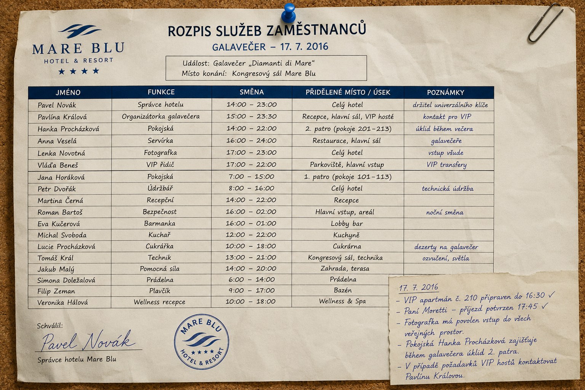
| Zaměstnanec | Funkce | Přidělené místo |
|---|---|---|
| Pavel Novák | Správce hotelu | Celý hotel |
| Pavlína Králová | Organizátorka | Recepce / hlavní sál |
| Anna „Annička“ Veselá | Servírka | Hlavní sál |
| Hanka Procházková | Pokojská | 2. patro hotelu |
| Lenka Novotná | Fotografka | Celý hotel |
| Vláďa Beneš | Řidič | Parkoviště / vstup |
D-03 — Hotelová karta hosta, apartmán č. 210
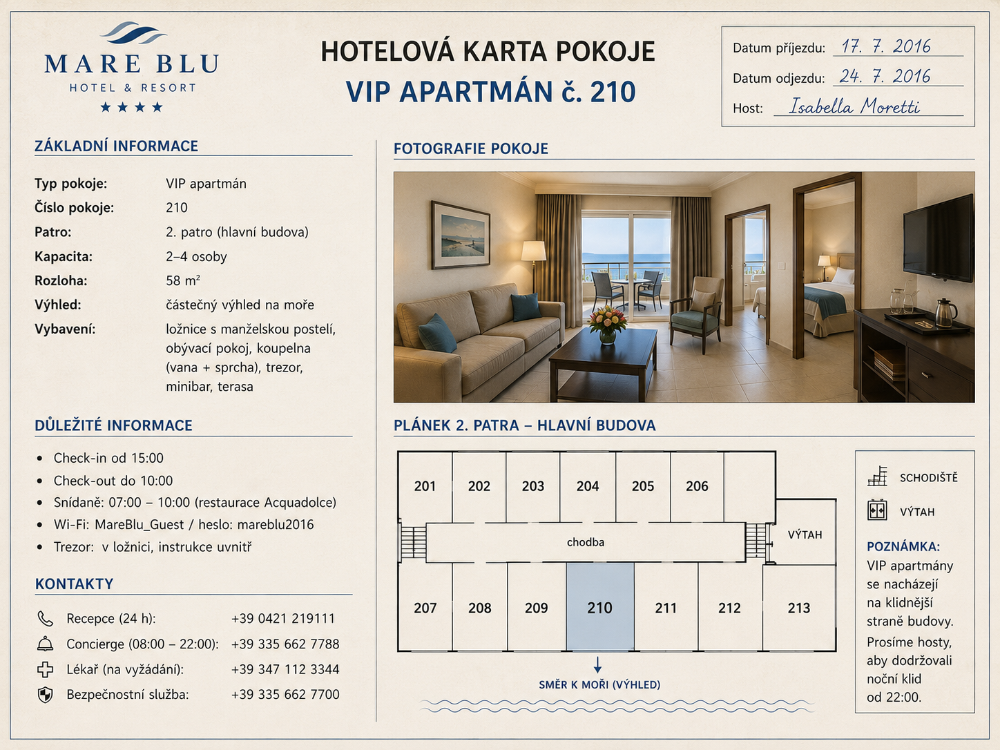
Isabella Moretti, VIP apartmán, doprava soukromým řidičem Vláďou Benešem. Do apartmánu vstupuje personál pouze na žádost hosta nebo v rámci běžného úklidu.
D-04 — Vizitka fotografky
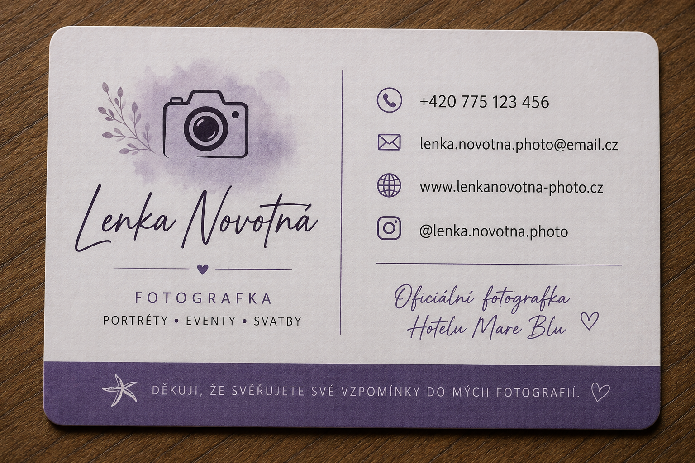
Potvrzuje, že Lenka Novotná byla oficiální fotografkou celé akce.
D-05 — VIP parkovací karta
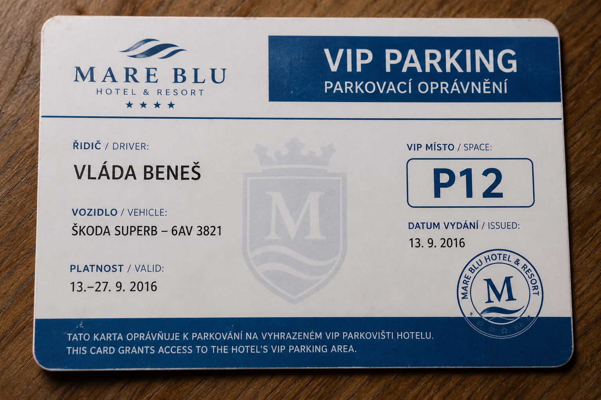
Potvrzuje, že Vláďa Beneš měl oprávnění vjíždět do VIP zóny. Neprokazuje jeho přítomnost v apartmánu.
D-06 — Účtenky z hotelové kavárny
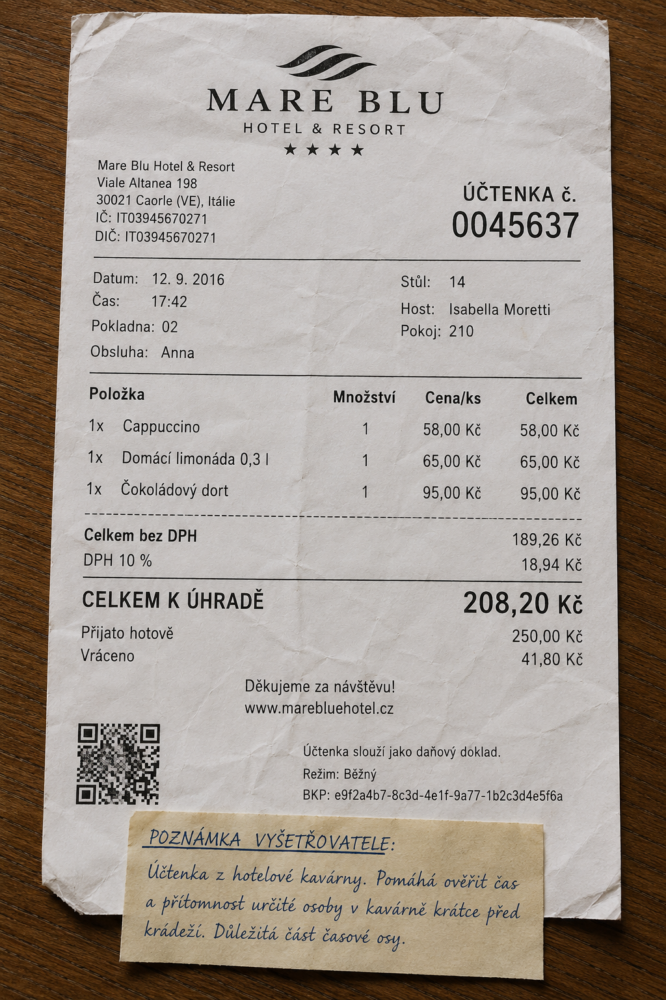
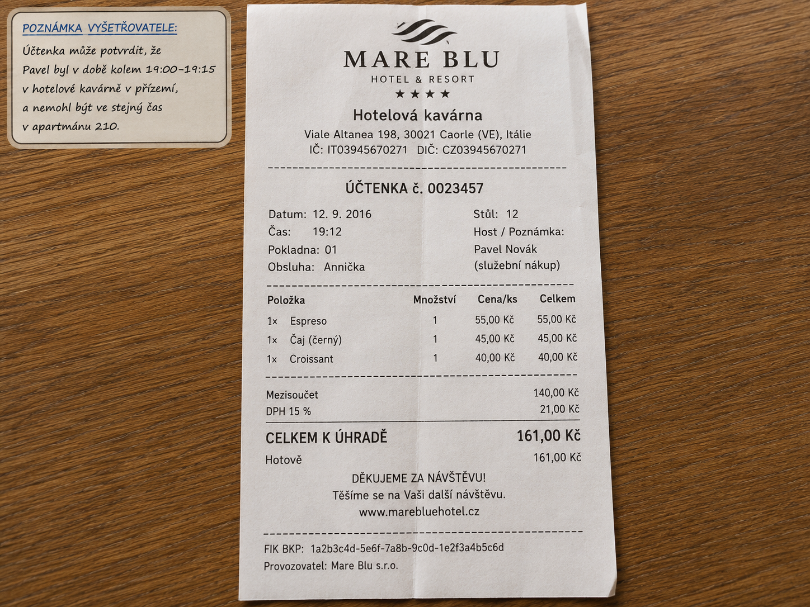
D-07/D-10 — Protokol a fotografie šperků
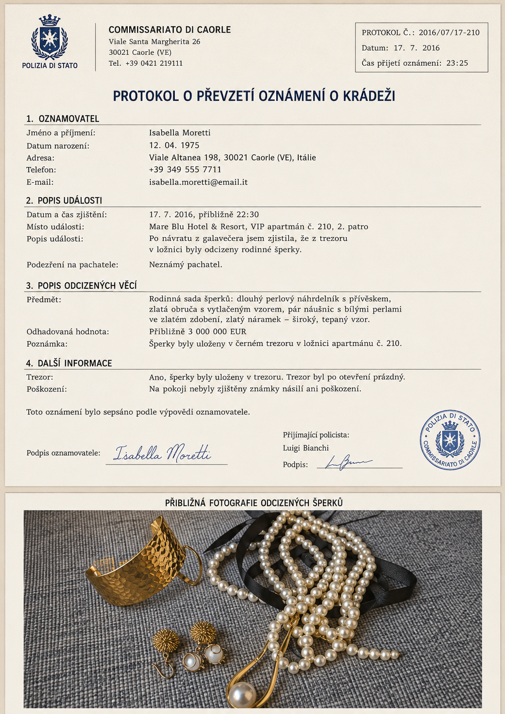
D-08/D-11 — Kniha ztrát a nálezů
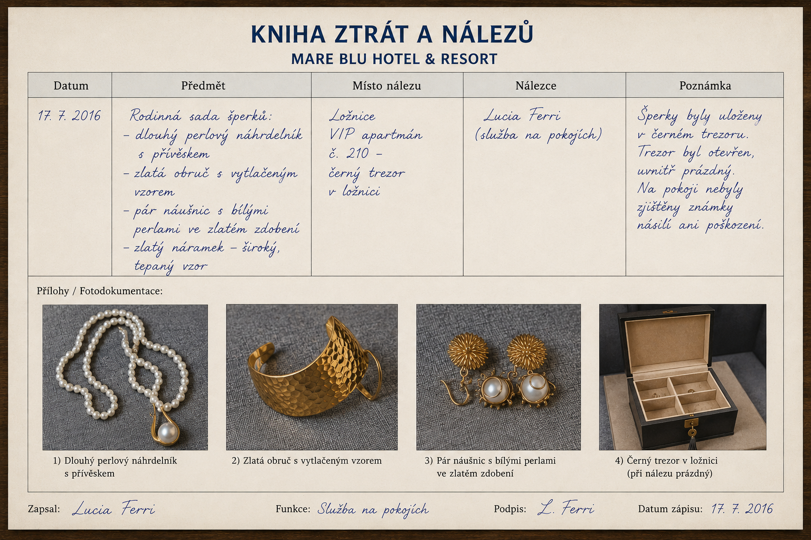
D-13 — Mapa hotelu Mare Blu
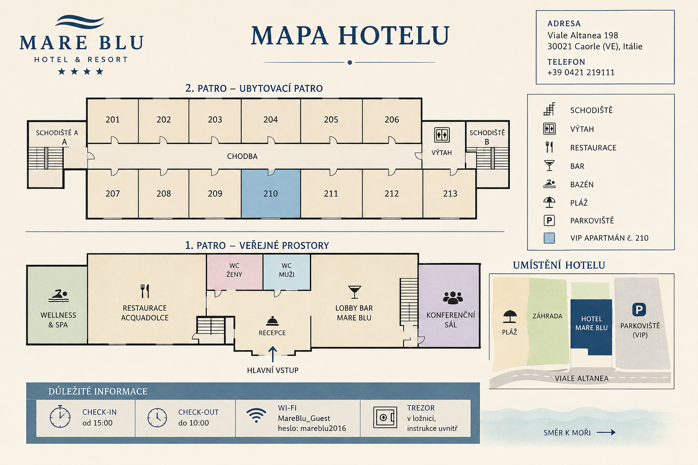
D-15 — Seznam hostů galavečera (výběr)
| Jméno | Poznámka |
|---|---|
| Isabella Moretti | VIP host |
| Pavel Novák | Správce hotelu |
| Pavlína Králová | Organizátorka |
| Lenka Novotná | Fotografka |
| Vláďa Beneš | VIP řidič |
| Anna Veselá | Obsluha |
| Hanka Procházková | Pokojská — služba |
D-16 — Evidence univerzálních klíčů
| Čas | Klíč | Převzal | Vráceno |
|---|---|---|---|
| 14:00 | MASTER-01 | Pavel Novák | 23:02 |
| 15:10 | MASTER-02 | — | — |
| 16:30 | MASTER-03 | — | — |
| 17:45 | VIP-210 | Isabella Moretti | — |
Poznámka vyšetřovatele: Univerzální klíč byl 17. 7. 2016 oficiálně vydán pouze správci Pavlu Novákovi. Neprokazuje, že byl použit k otevření apartmánu č. 210.
D-17 — Předávací protokol, apartmán č. 210
Pokoj připravila: Hanka Procházková — pokojská. Zkontroloval: Pavel Novák — správce hotelu. Vše bez závad.
Poznámka vyšetřovatele: Hanka Procházková měla do apartmánu přístup pouze při jeho přípravě před příjezdem paní Moretti. Neprokazuje žádný pozdější vstup.
D-18 — Denní hlášení správce
| 17:45 | Příjezd VIP hosta — Isabella Moretti |
| 18:05 | Předání informací organizátorce Pavlíně Králové |
| 18:50 | Krátká kontrola osvětlení ve 2. patře |
| 19:30 | Zahájení galavečera |
| 22:47 | Nahlášena krádež rodinných šperků |
| 22:55 | Přivolána Policie Caorle |
D-19 — Usnesení o odložení případu (2016)
Nebyly nalezeny použitelné daktyloskopické ani biologické stopy vedoucí ke konkrétní osobě. Nebyly zjištěny známky násilného vniknutí. Vzhledem k nedostatku přímých důkazů se trestní věc odkládá.
D-20 — Výpis z rezervační knihy
| Pokoj | Host | Poznámka |
|---|---|---|
| 208 | Alessandro Moretti | Rodina VIP |
| 209 | Giulia Conti | VIP host |
| 210 | Isabella Moretti | VIP apartmán |
| 213 | Neobsazeno | Údržba |
D-21 — Forenzní zpráva z ohledání místa činu
| Vstupní dveře | Bez známek násilného vniknutí |
| Šperkovnice | Nalezena otevřená na toaletním stolku |
| Odcizené věci | Pouze rodinné šperky |
| Hotovost | Ponechána na místě |
| Známky zápasu | Nezjištěny |
Závěr: Pachatel se soustředil výhradně na šperkovnici, jednal rychle a využil krátkého okamžiku, kdy byl apartmán bez dozoru.
D-22 — Obnovení vyšetřování (2026)
31. 7. 2026 byla při rekonstrukci hotelu nalezena kovová schránka se šperky odpovídajícími odcizenému majetku. Nález vedl ke znovuotevření případu.
D-23 — Dodatek k časové ose
| 19:05 | Pavlína Králová odchází vyzvednout Isabellu Moretti |
| 19:20 | Isabella a Pavlína odcházejí z apartmánu do hlavního sálu |
| 19:24–19:27 | Pravděpodobný čas krádeže |
| 19:28 | Fotografka Lenka pořizuje snímek chodby ve 2. patře (F-13) |
| 19:30 | Zahájení galavečera |
| 19:32 | Fotografie hlavního sálu (F-14) |
F-01/F-02, F-13/F-14 — Fotografie z místa
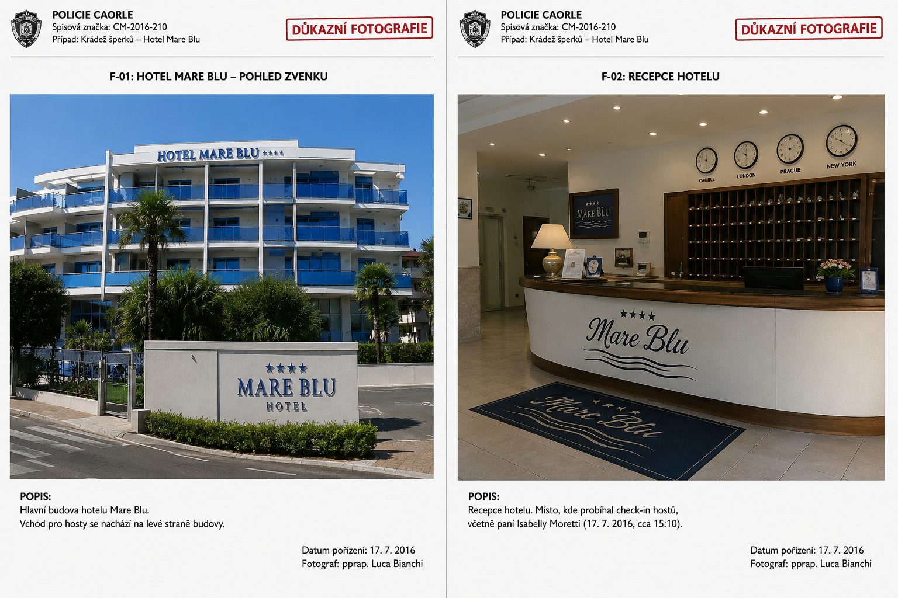
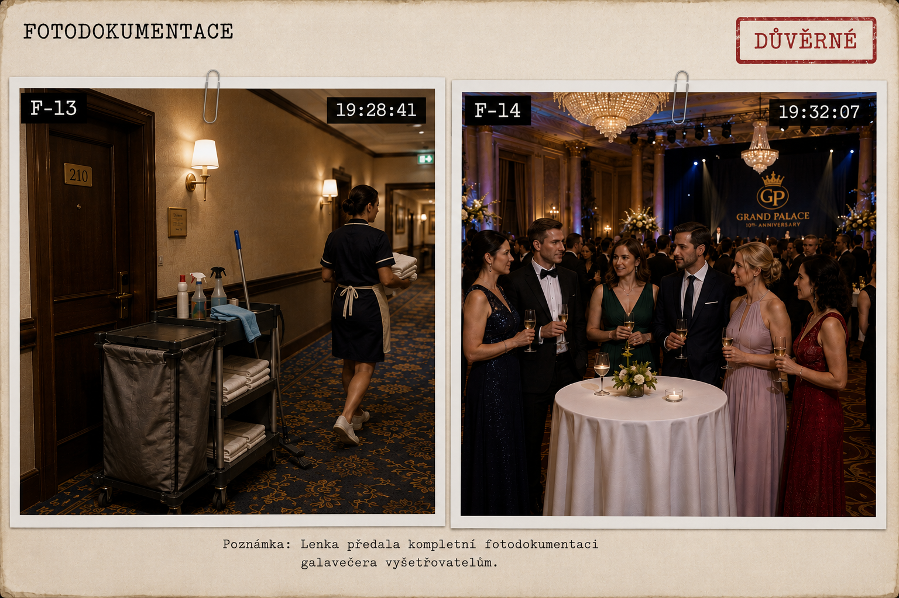
Doprovodná zpráva fotografky Lenky Novotné (2026): Fotografie F-13 zachycuje chodbu ve 2. patře během přípravy hotelu — snímek vznikl náhodně. F-14 zachycuje hlavní sál s většinou hostů několik minut po zahájení galavečera. Význam obou snímků vyplynul až po porovnání časových razítek s ostatními dokumenty.
Doplňkové/archivní materiály (starší verze — pouze pro organizátora)
Následující obrázky jsou dřívější pracovní verze některých dokumentů a obsahují mírně odlišné (neplatné) údaje. Ponecháváme je v archivu pro úplnost, ale doporučujeme je dětem nepředkládat, aby nedošlo ke zmatení s finální verzí důkazů.
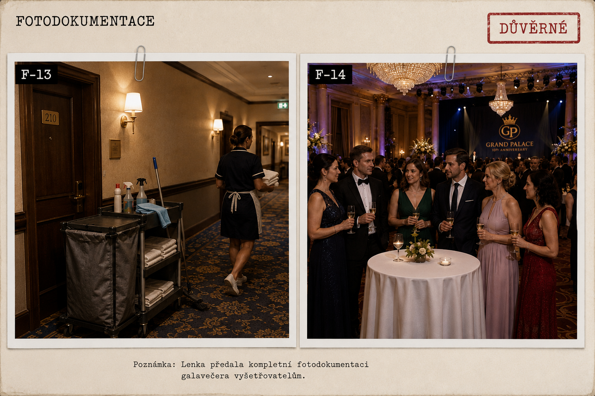

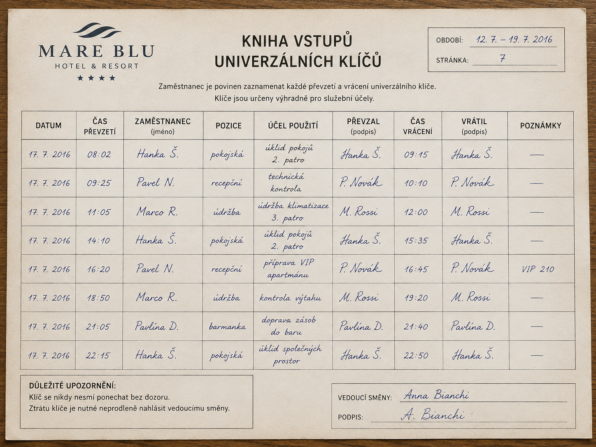

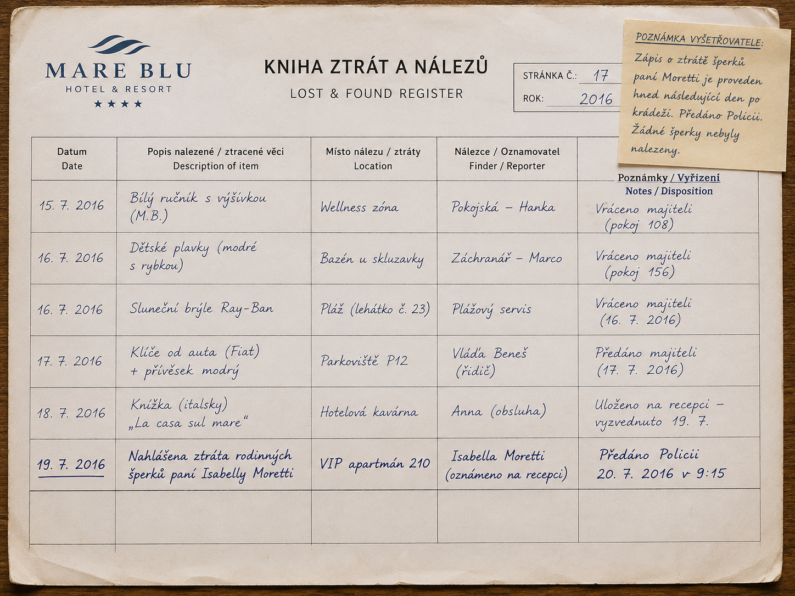
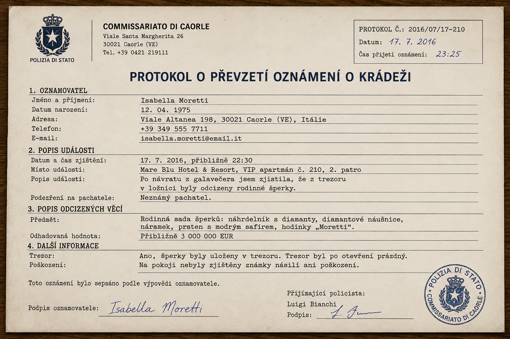
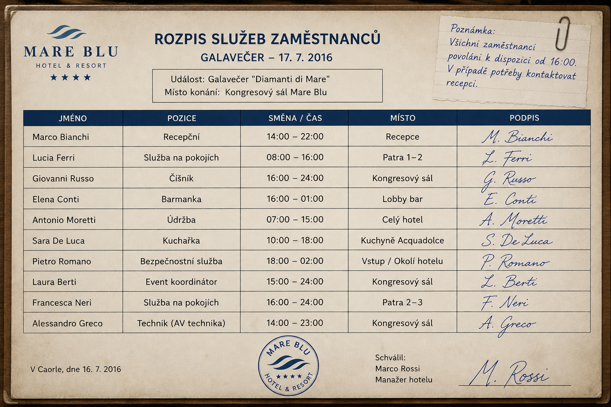

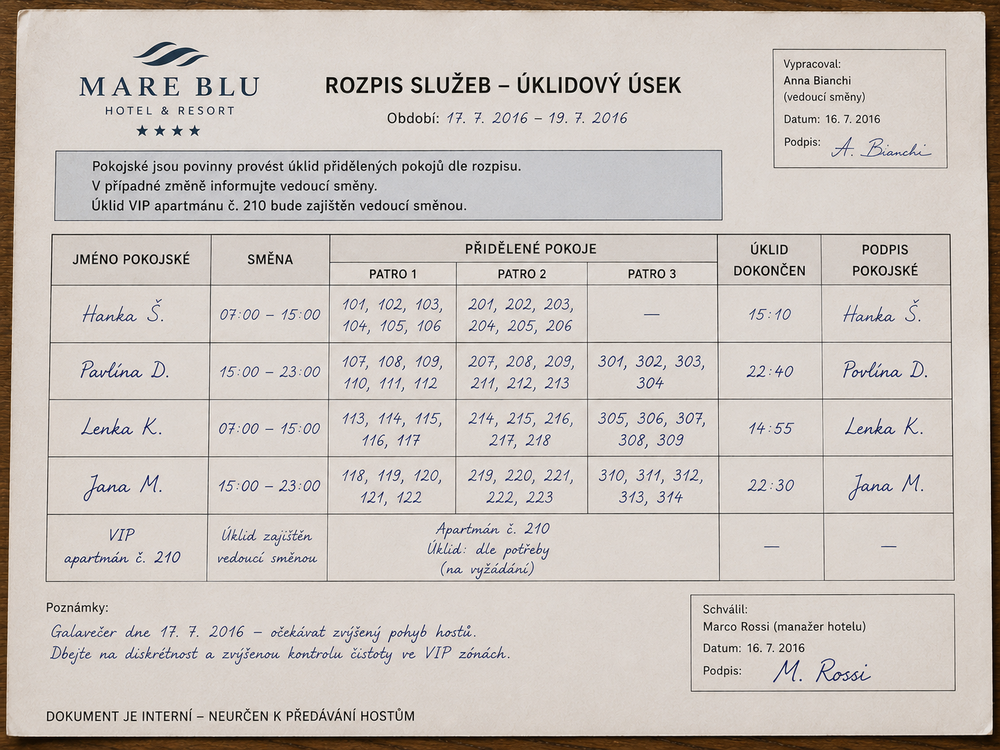